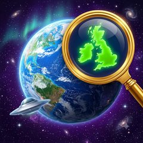
つくって配れる、3Dまちがいさがし
Machigai Planet — Make & share 3D spot-the-difference
このページの画像は記事・レビューにご自由にお使いいただけます（クレジット表記不要）。
All assets on this page are free to use in articles and reviews. No credit required.
| タイトル | まちがい惑星（英題: Machigai Planet） |
|---|---|
| ジャンル | 3Dまちがいさがし（パズル／ファミリー） |
| プラットフォーム | iPhone（iOS 14.0以降）※横画面 |
| 配信日 | 2026年7月31日 |
| 価格 | ¥160 買い切り（米国 $0.99）／アプリ内課金なし・広告なし |
| 対応言語 | 日本語・英語（端末の言語設定で自動切替） |
| 配信地域 | 全世界 |
| 容量 | 約123MB |
| 年齢制限 | 4+ |
| 開発・発売 | YOSHITAKE HIROTA（個人開発） |
| App Store | https://apps.apple.com/jp/app/id6795407869 |
| 公式X | @YOSHITAKEapp |
| サポート | support ／ privacy |
| 連絡先 | hanshin1653@gmail.com |
3Dの世界を歩いて、左右2画面を見くらべる新しいまちがいさがし。自分で作った問題を友だちに配れます。
左が正解のお手本、右がまちがいの世界。3Dの中を自由に歩き回り、左右を見くらべてちがいをタップします。空も地面も動物の模様も対象で、ちがいは360度どこにでも。自分で問題を作って友だちに配ることもできます。
『まちがい惑星』は、3Dの世界を歩いてさがすまちがいさがしです。画面は左右2分割で、左が正解のお手本、右がちがいの仕込まれた世界。2つの視点は連動しており、歩くと左右が同時に動きます。ちがいは平面の絵の中ではなく、空も地面も動物の模様も含めた360度のどこかに隠れています。まほう工房・どうぶつ園・夜の夏祭り・海のそこ・宇宙の5つの舞台を巡る全30ステージに加え、毎日更新される「きょうのまちがい」を収録。さらに7つの道具で自分の部屋にちがいを仕込み、QR・近距離ワイヤレス・リンクの3通りで友だちに配れます。サーバーもアカウントもなく、広告・追加課金もない¥160の買い切りです。
Machigai Planet is a spot-the-difference game you play by walking. The screen is split in two: the left view is the correct reference, the right one hides the differences — and both views move together as you explore. Differences hide anywhere in 360 degrees: the sky, the ground, even an animal's pattern. It packs 30 stages across 5 worlds, a daily puzzle shared by every player, and a creation mode where you hide your own differences and hand the puzzle to a friend via QR code, nearby wireless (no internet needed), or a link. No servers, no accounts, no data collection, no ads. One-time purchase ($0.99).
サムネイルをクリックすると原寸（2796×1290 PNG）が開きます。
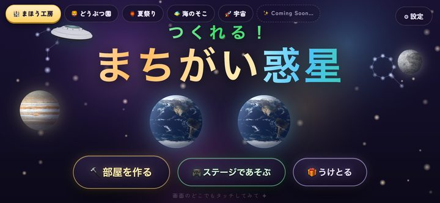
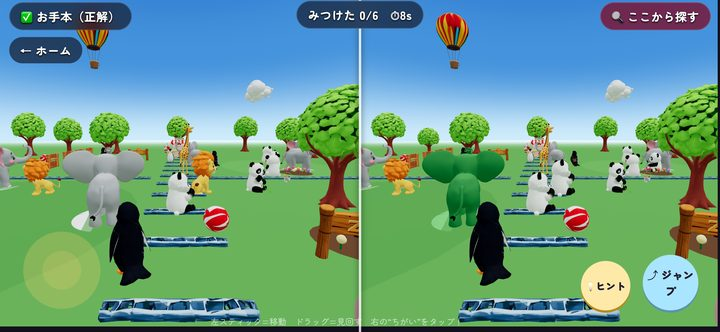
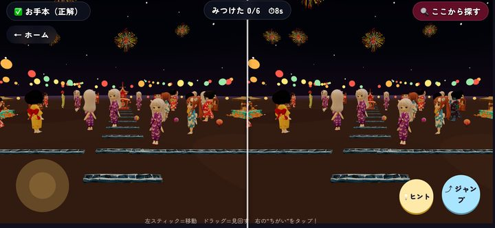
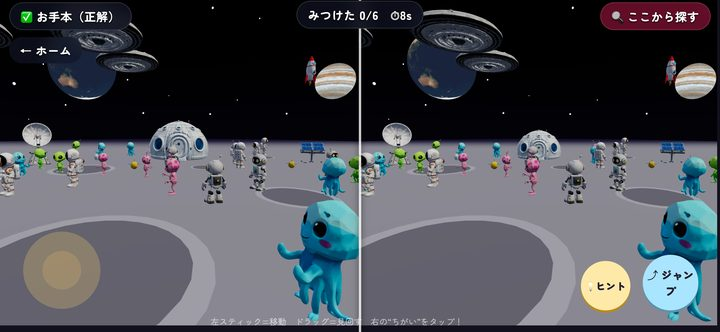
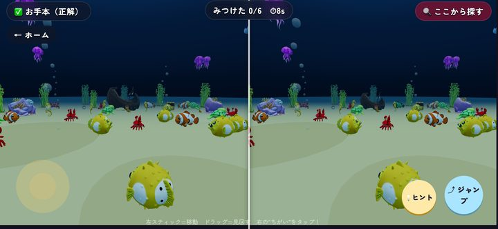
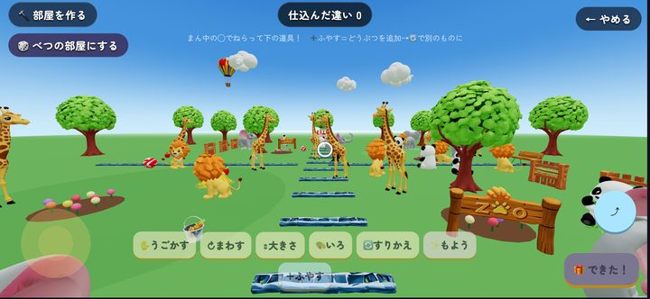
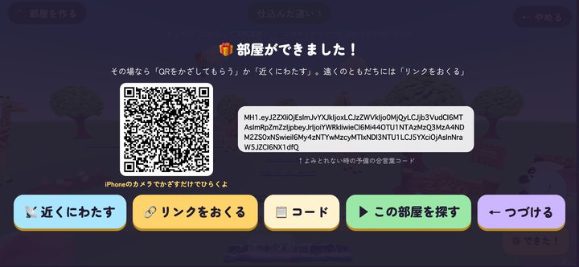
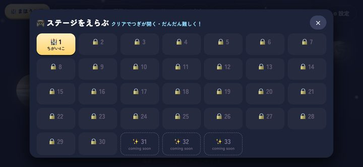
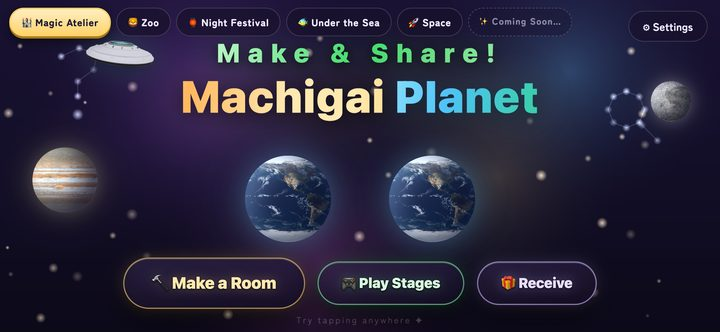
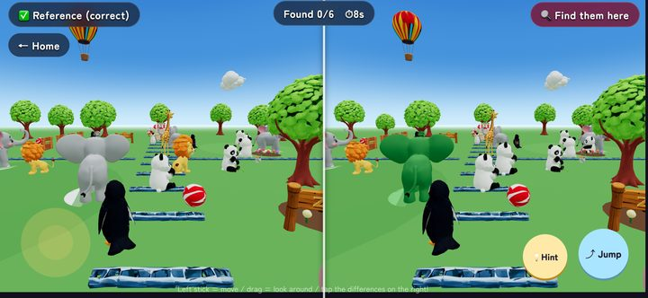
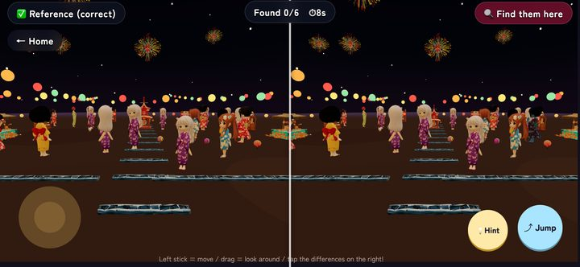
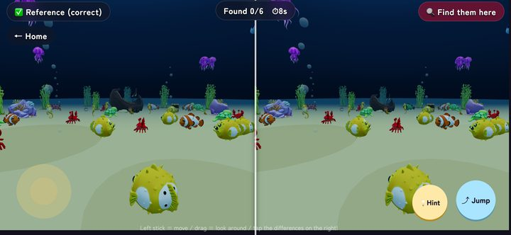
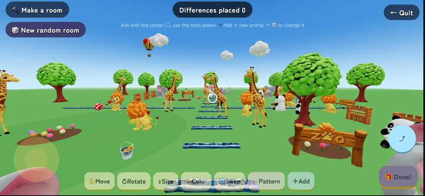
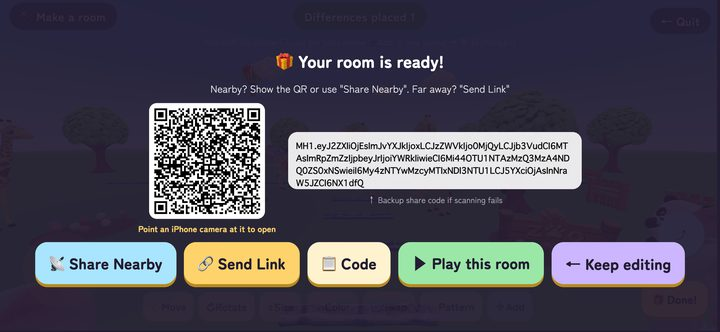
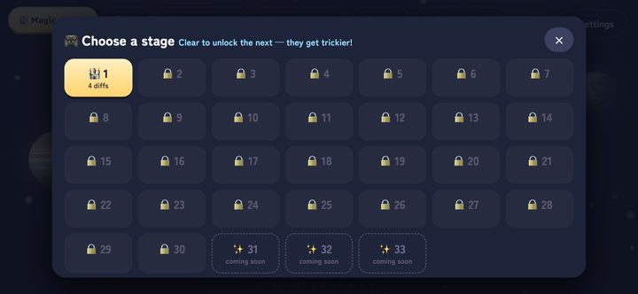
3200×1800 PNG。記事の見出し画像などにどうぞ。
記事利用可クレジット不要改変（トリミング等）可
このページの画像は、記事・レビュー・紹介動画にご自由にお使いいただけます。動画素材や特定の場面の撮り下ろし、追加のスクリーンショットが必要な場合は、お気軽にご連絡ください。レビュー用のプロモコードもご用意できます。
Additional screenshots, video footage, or promo codes are available on request — just email us.